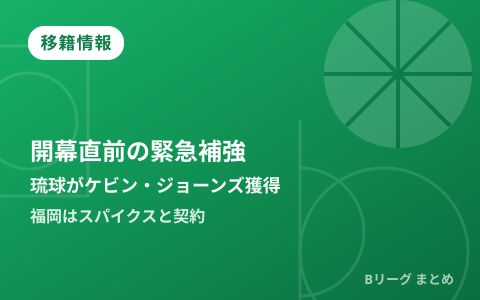

B.PREMIER開幕直前の緊急補強 琉球がジェレット離脱でケビン・ジョーンズ獲得、福岡はスパイクスと契約

9月22日のB.PREMIER開幕を目前に控え、各クラブの土壇場での補強が相次いでいます。琉球ゴールデンキングスは、右下肢静脈血栓症でインジュアリーリスト入りしたグラント・ジェレットの穴を埋めるため、古巣復帰となるケビン・ジョーンズと契約。ライジングゼファー福岡も、バンビシャス奈良を離れたナイジェル・スパイクスと短期契約を結びました。開幕直前に動いた2件の補強をまとめます。
琉球、ジェレット離脱の穴をケビン・ジョーンズで補強
琉球ゴールデンキングスは9月18日、ケビン・ジョーンズ選手（#21）との新規契約を発表しました。今季から加入したばかりのグラント・ジェレットが右下肢静脈血栓症を発症し、9月9日付でインジュアリーリストに登録され、全治未定のまま開幕を迎えることになったための緊急補強です。
ジョーンズは203cm・110kgのパワーフォワードで、2018-19シーズンに琉球でプレーした経験を持つ古巣復帰組。その後はアルバルク東京、サンロッカーズ渋谷、京都ハンナリーズを経て、2025-26シーズンはレバンガ北海道でキャプテンを務め、53試合で平均12.3得点・6.3リバウンド・2.1アシストを記録していました。琉球にとっては、インサイドの経験値をそのまま補える即戦力の加入となります。
| 選手（ポジション） | 新所属 ← 前所属 |
|---|---|
| ケビン・ジョーンズ（PF） | 琉球ゴールデンキングス ← レバンガ北海道 |
福岡はナイジェル・スパイクスと短期契約、6季ぶりの復帰
ライジングゼファー福岡は、バンビシャス奈良を離れたナイジェル・スパイクス選手と2026-27シーズンの短期契約を締結したと発表しました。スパイクスは2020-21シーズンに福岡でプレーした経験があり、今回は6季ぶりの復帰となります。
スパイクスは208cmのセンターで、2025-26シーズンはバンビシャス奈良で43試合に出場し、平均10.1得点・8.9リバウンド・1.8アシスト・1.1スティール・1.2ブロックとインサイドで存在感を示していました。福岡にとっては、開幕直前にリバウンド力とブロック力を上乗せする補強です。
| 選手（ポジション） | 新所属 ← 前所属 |
|---|---|
| ナイジェル・スパイクス（C） | ライジングゼファー福岡（短期契約） ← バンビシャス奈良 |
開幕直前の補強が相次ぐ理由
B.PREMIERは9月22日（火・祝）にアルバルク東京vs琉球ゴールデンキングスの一戦で開幕します。開幕を目前に控えたこの時期は、キャンプでの負傷離脱や構想外通告を受けて、各クラブが自由交渉選手リストの中から即戦力を探す動きが例年活発になるタイミングです。今回の2件も、開幕直前でロースターの最終調整を迫られたクラブの事情が背景にあります。開幕戦の詳細な放送予定はこちらの記事でまとめています。
Q. ジェレットは今シーズン復帰できる？
A. 現時点（9月9日発表）では全治未定とされており、復帰時期は明らかになっていません。最新情報は琉球ゴールデンキングスの公式発表をご確認ください。
出典：バスケットボールキング「ジェレット離脱の琉球ゴールデンキングスが補強…ケビン・ジョーンズを獲得」／バスケットボールキング「ライジングゼファー福岡がナイジェル・スパイクスと短期契約締結…6季ぶりの復帰」／琉球ゴールデンキングス公式「#33 グラント・ジェレット選手インジュアリーリスト登録のご報告」ほか
https://basketballking.jp/news/japan/20260918/633213.html
https://basketballking.jp/news/japan/20260918/633220.html
https://goldenkings.jp/news/detail/id=26157